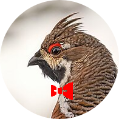

<header>
{% if site.theme_config.show_navbar == true %}
  {% include horizontal_list.html collection=site.data.home.navbar_entries %}
  <div class="dashed"></div>
{% endif %}

  <div style="display: flow-root;">
    <style>
      @media screen and (max-width: 768px) {
        .profile-image {
          width: 96px !important;
          height: auto;
          margin-right: 2em !important;
          margin-bottom: 1.5em !important;
          margin-top: 1.5em !important;
        }
        .site-description {
          clear: both;
          margin-bottom: 0em;
        }
        .site-title {
          margin-top: 0.8em;
        }
      }
    </style>
    
    <h1 class="site-title" style="padding-top: 1em;">{{ site.title }}</h1>
    {% if site.theme_config.show_description == true %}
      <p class="site-description">{{ site.description }}</p>
    {% endif %}
  </div>
</header>

{{ content }}

{% if site.theme_config.show_misc_list == true %}
<h2 class="section-label">{{ site.theme_config.home.title_misc_list }}</h2>
{% include vertical_list.html collection=site.data.home.misc_entries %}
{% endif %}

{% if site.theme_config.show_presentations == true %}
<h2 class="section-label">{{ site.theme_config.home.title_presentations }}</h2>
{% include vertical_list.html collection=site.data.home.presentations_entries %}
{% endif %}

{% if site.theme_config.show_blog == true %}
<h2 class="section-label">{{ site.theme_config.home.title_blog }}</h2>
{% include post_list.html %}
{% endif %}

{% if site.theme_config.show_projects == true %}
  <h2 class="section-label">{{ site.theme_config.home.title_projects }}</h2>
  {% include vertical_list.html collection=site.data.home.project_entries %}
{% endif %}

{% if site.theme_config.show_old_projects == true %}
  <h2 class="section-label">{{ site.theme_config.home.title_old_projects }}</h2>
  {% include card_list.html collection=site.data.home.old_project_entries %}
{% endif %}

{% if site.theme_config.show_footer == true %}
  <footer>
    <div class="dashed"></div>
    {% include horizontal_list.html collection=site.data.home.footer_entries %}
  </footer>
{% endif %}
